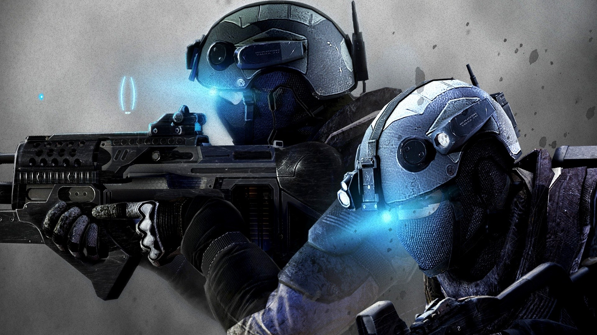
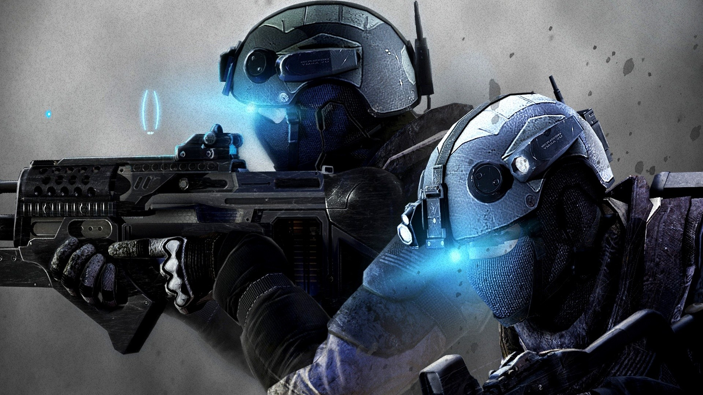

Assassin's creed
"Assassin's Creed" é um jogo de ação e aventura desenvolvido pela Ubisoft. No jogo, um membro da ordem dos Assassinos, uma sociedade secreta que luta contra os Templários, um grupo rival com intenções de controlar a humanidade.
Metal Gear Rising
"Metal Gear Rising: Revengeance" é um jogo de ação desenvolvido pela PlatinumGames e publicado pela Konami.O jogo segue Raiden, é Raiden um cyborg ninja, que se torna um agente de uma organização privada de segurança.
Dark Souls
"Dark Souls" é um jogo de ação e RPG desenvolvido pela FromSoftware. É conhecido por seu nível de dificuldade desafiador, o jogo se passa em um mundo sombrio e decadente chamado Lordran, onde a luz está se extinguindo e a humanidade enfrenta uma praga de mortos-vivos.
The Witcher
"The Witcher" é um jogo de RPG desenvolvido pela CD Projekt. Você assume o papel de Geralt de Rivia, um bruxo — um caçador de monstros treinado e geneticamente modificado. Geralt busca recuperar suas memórias perdidas e resolver uma conspiração do grupo chamado de "Os Profetas do Destino".
Counter-Strike - (CS)
"Counter-Strike" (CS) é um jogo de tiro em primeira pessoa (FPS) que começou como um mod para "Half-Life" e foi desenvolvido por Minh Le e Jess Cliffe. O jogo rapidamente se tornou um dos títulos mais influentes e populares do gênero. No "Counter-Strike", os jogadores são divididos em duas equipes: Terroristas e Contra-Terroristas.
The Last of Us
"The Last of Us" é um jogo de ação e aventura desenvolvido pela Naughty Dog para o PlayStation 3, com versões posteriores para outras plataformas. O jogo se passa em um mundo pós-apocalíptico devastado por uma infecção fúngica que transforma os humanos em monstros hostis.
God of War
"God of War" é uma série de jogos de ação e aventura desenvolvida pela Santa Monica Studio e publicada pela Sony Interactive Entertainment. A série é conhecida por suas intensas batalhas, narrativa épica e mitologia rica. No você controla Kratos, um guerreiro espartano que busca vingança contra os deus.